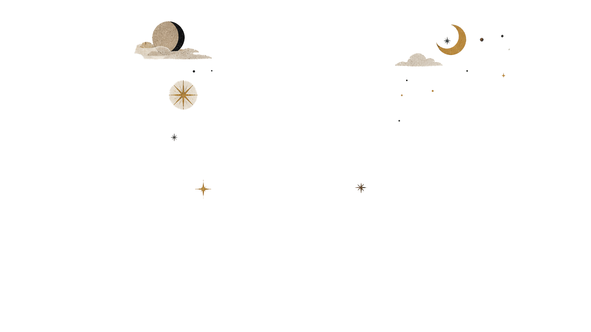
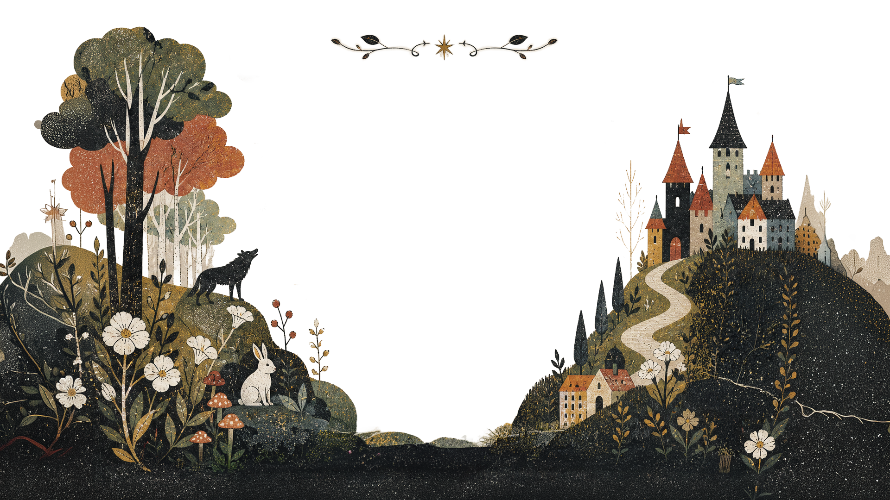
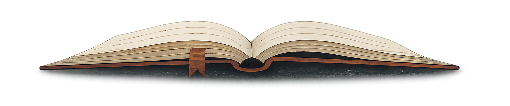

도움말
✶ 시작 방법
- 서재에서 원하는 동화책을 선택하세요.
- 진행할 수 있는 파트(방)를 클릭해서 이야기를 시작합니다.
- 이야기 속 선택지를 골라가며 나만의 엔딩을 완성하세요.
✶ 진행 방식
- 이야기는 1번 → 2번 → 3번 순서로만 진행됩니다. 앞 단계 없이 다음 단계로 건너뛸 수 없습니다.
- 방의 기록과 플레이어는 묶여 있지 않습니다. 이전 단계를 완료한 분이 나가도, 클리어 기록이 남은 방에 새로운 분이 들어와 이어갈 수 있습니다.
- 1번 방은 누구나 언제든 새로 시작할 수 있어, 고유한 줄기(A, B, C…)가 계속 생겨납니다.
⚠️ 유의사항
- 진행 중 새로고침을 하면 저장되지 않습니다. 한 파트를 끝내거나 엔딩을 봐야 기록이 남습니다.
- 이야기 중 뒤로가기는 불가합니다. 선택지를 고를 때 신중히 생각해 주세요.
- 다른 이용자에게 불쾌함을 줄 수 있는 이름 사용은 금지됩니다.